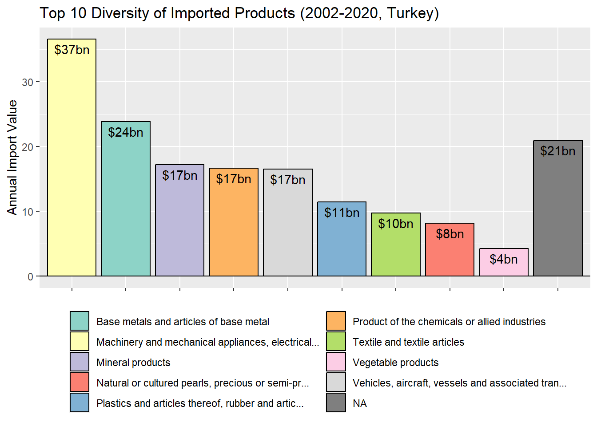

For the analysis period which is between 2002 and 2020, Turkey kept its net importer position in majority of the product categories that are primarily used as intermediary goods.
Turkey’s dependence on energy and natural resources is concentrated, posing a significant risk if relations with Russia and Iran were to deteriorate. A similar vulnerability is observed in machinery and mechanical components, suggesting the need for diversification or incentives to encourage local production.
Turkey has close relations with Europe, taking advantage of being a signatory of custom union with the EU. On the contrary; the exposure to Europe, as evidenced in this study, underscores a category risk for Turkey. Economic downturns or recessions in Europe significantly impact Turkey’s exports and imports.
While Turkey boasts more than 200 trading partners for both exports and imports, the high revenue-generating product categories lack diversification. Most of the top 10 product categories show stagnant or declining growth in USD values. This signals the importance of exploring new markets and expanding the product portfolio to mitigate risks associated with concentrated trade.
As the main outcome; this study reveals Turkey’s heavy reliance on intermediate goods and a relatively lower emphasis on strategic investments in R&D and incentives for a skilled workforce, pointing out a necessity of adopting a new economic model, which encourages innovation, reduces dependence on intermediates, increasing diversification of trade partners and ensures a more sustainable and resilient trade ecosystem.
Introduction
Our group project, “Turkey Analysis: Trade Balance & Partners” delves into the details of Turkey’s international trade landscape from 2002 to 2020.
Utilizing the data aggregation capabilities of WITS, our analysis covers Turkey’s export & import dynamics and its relations with trade partners during this significant period. The data, sourced from a package developed by a team led by Mauricio Vargas provides a comprehensive overview of Turkey’s trade dynamics.
Throughout our analysis, we uncovered key findings that include the consistent upward trajectory of Turkey’s exports and imports, the influence of global events such as the financial crisis and the impact of monetary policies and currency fluctuations. Notably, Turkey has maintained a persistent foreign trade deficit, with fluctuations and intriguing trends observed in different years.
Our exploration extends to product categories, revealing that certain sectors, like textiles and machinery, significantly contribute to Turkey’s export revenue. On the import side, machinery and base metals play a crucial role. We also delve into the trends of these categories over the years, identifying fluctuations and their potential drivers.
Additionally, our analysis scrutinizes Turkey’s trade partnerships, highlighting the country’s diverse range of trading allies. We examine the top trading partners, Turkey’s net exporter/importer positions, and the evolution of trade relations over the last five years.
Outcomes
Exports & Imports Analysis
Turkey has experienced a consistent upward trajectory in both exports and imports from 2002 to 2020, as measured in USD values, influenced by factors such as global crisis, commodity shocks and changes in macroeconomic policies and currency exchange rates. After the 2001 crisis, Turkey changed its monetary policy and floating exchange rate application which significantly changed Turkey’s trade dynamics1. A notable slowdown in total trade values occurred in 2009, coinciding with the global financial crisis of 2008 when total trade deficit of Turkey was at $39 billion. In this period, EU market which receives almost 50 percent of Turkey’s exports went through rapid contraction and the efforts to change the destination of exports toward Middle East and North Africa markets could not compensate for the loss2. Between 2011 and 2014, Turkey witnessed an expansion in its foreign trade deficit, which then started to decrease from 2015 until 2020, except for a notable spike in 2017. During this period, Turkey’s foreign trade deficit narrowed to $63 billion in 2015 from $85 billion in 2014 and $100 billion in 2013.
The decrease in oil prices and downward trend in commodity prices was contributed to the reduction of Turkey’s foreign trade deficit in 2015. According to a study3, intermediate goods trade deficit in Turkey’s economy is about twice the size of the total trade deficit and oil price shocks have more permanent and effective impact on the intermediate goods trade balance. Turkey’s dependency on intermediate goods will be presented in detail in the upcoming sections. On the other hand, the decline in 2015 can be attributed to the implementation of quantitative easing in Europe, implemented after European debt crisis and recession, leading to an increased money supply in the region and devalued EUR against USD.
EU and G20 countries have always been as crucial economic partners for Turkey and euro-dollar parity plays a significant role in affecting Turkey’s trade values. The head of the Exporters’ Assembly of Turkey (TİM) during that period stated that, despite an increase in export amounts, the adverse impact of the euro-dollar parity amounted to ~$750 million on exports in the first 11 months of 2015.
Spike in 2017 can be attributed to increase in energy bills due to higher oil prices. Subsequently, the impact of non-monetary gold imports and exports began to play a significant role in trade statistics. Slowdown in economic activity, stemming from the currency crisis in August 2018, played a significant role on narrowing foreign deficit in 2019. Weakening economic activity on a global scale due to pandemic in 2020 have resulted in lower exports compared to imports, that resulted in wider foreign trade deficit.
We will delve deeper into the yearly dynamics and extend our analysis by examining product categories and trade partners.
Top Export Product Categories
Turkey’s annual export revenue on average throughout the analysis period is ~125bn USD.
Turkey’s top 10 export revenues constitute 89% of total export income.
Textiles and apparel, machinery and equipment, vehicles and associated equipment as well as base metals and mineral products are the significant contributors to Turkey’s export revenue.
Findings from a study conducted by the TIM4, which defines the top 1000 exports, align with our observations. Prominent exporter companies in Turkey are engaged in the export of vehicles and spare parts, home appliances, and the export of base metals and mineral products. Examples include engine manufacturers and auto-makers, Ford Otosan, Toyota, Oyak-Renault, foreign trade company Kibar, major home appliances producers Vestel and Arcelik, automaker and energy firms Tupras and Socar. The study also highlights the presence of textile manufacturers on the list, although they may not be top-rated, indicating a higher number of companies in this category compared to others in Turkey.
In the second chart, the initial decline in export values across all product categories aligns with the 2008 crisis. Upon examining the yearly patterns of each product category, it becomes evident that vegetable products, plastics, and foodstuffs stand out as the most resilient to external factors, showcasing inelastic demand and maintaining their resilience against macroeconomic events. Peak in vegetable exports occurred in 2020 during the entire analysis period.
Following its peaks in 2012 and 2013, a notable decrease in the exports of natural and mineral products occurred after 2015. This decline can be attributed largely to China’s reduction in incentives within the construction industry, as being Turkey’s top export partner in this product category5.
In 2020, a downward trend was noted in almost every product category with the weakening economic activity on a global scale due to pandemic, except the resilient ones mentioned earlier.
Top Import Product Categories
Turkey’s import value on average throughout the analysis period is ~183 bn USD.
Turkey’s top 10 import value constitute 81% of total imports.
Machinery and equipment, base metals and their articles, mineral products, chemicals as well as vehicles and associated equipment constitute the primary import categories contributing to Turkey’s import value. There is a substantial import of investment goods, components and parts, along with unprocessed materials used in industrial activities. Sectors with the highest import requirements are the ones with higher capital and technology intensity6 .This highlights Turkey’s dependence on a significant influx of intermediate goods and FDIs.
Uncategorized value, labelled as NA has an average of $21 billion of import bill throughout the analysis period, fills a gap in this analysis that we haven’t touched upon, which is the energy dependency of Turkey. Between 2002 and 2020, Turkey’s average energy bill, as reported by the Turkish Statistical Institute in the Foreign Trade Indicators, amounts to $31 billion. This constitutes 17% of Turkey’s total imports, playing a significant role in driving the economy.
Second chart also proves that Turkey’s exports are concentrated in the sectors where the use of imported inputs has expanded during the past two decade.7 The third chart explicitly highlights Turkey’s import dependency, underscoring the critical need to enhance local input production. This transition is crucial in order to position Turkey with its price advantage (undervalued TL), boost export profitability and enhance its competitiveness in the international market.
Based on these observations, there is a need for a strategic focus on R&D investments and incentives for a highly skilled workforce. This is crucial for adoption of a new economic model, which Turkey could leverage to reduce its reliance on intermediate goods.

Trade Partnership Analysis
Diversification of Export Revenue Streams by Top 10 Product Category
Ensuring a broad range of diverse trade partners is crucial for any country in order to diversify its export and import streams and serves as a risk mitigation strategy, particularly in the face of any possible geopolitical challenges.
We have identified that Turkey engages with more than 200 distinct export partners across its top 10 product categories, showcasing a diversified revenue stream. As previously noted in the above sections, Textiles and Apparel, Vehicles and Associated Equipment and Base Metals and Mineral Products stand out as significant contributors to Turkey’s export revenue.
In the last five years, leading revenue contributor, textiles has shown a stagnant trend. Meanwhile, revenue generated from second and third highest sources, namely vehicles and equipment and base metals have been declining during this period. Conversely, Mineral Products, Miscellaneous Manufactured Articles, Vegetable Products and Plastics demonstrated an increased capacity for revenue generation albeit still trailing behind the primary product categories mentioned earlier.
*Each bubble represents 5 year CAGR (2015-2020) for each product category
Diversification of Import Revenue Streams by Top 10 Product Category
Through this analysis, we have identified that Turkey’s dependency is diversified and country engages with more than 200 distinct import partners across its top 10 product categories, excluding natural product categories (mostly composed of semi-precious products, stones and powder).
In the last five years, import stream from machinery and mechanical appliances have been declining which has the highest contribution to import value of Turkey and has the highest distinct number of trading partners. Meanwhile, import values of vehicles and equipment and chemicals were flat during this period. Conversely, plastics demonstrated a substantial increased import value over the last five years. After China banned plastic waste imports, Turkey became one of the world’s primary destinations for the global plastic waste trade.8
*Each bubble represents 5 year CAGR (2015-2020) for each product category
Top 10 Trading Partners
Top 10 trade partners’ trade value (total exports+imports) with Turkey throughout the analysis period constitute 51% of total trade value.
Turkey has strong relations with neighboring countries - close relations with Germany and Italy - followed by major economies such as China, USA and Russia.
Germany ranked as the number one destination for Turkey, having solidified the roots of the relationship between the two countries during postwar economic boom. This connection further expanded after the establishment of the Customs Union.
Since 1991, Turkey and Russia, as countries with a shared maritime border, have been enhancing their trade cooperation. Russia has emerged as a significant supplier of energy sources to Turkey, while in return, Turkey offers extensive tourism and construction services9.
Introduction of Belt & Road Initiative which was introduced by China in 2013, is a multinational effort to revive Silk Road and carry out trade through Far East Asia and Europe, with feeding different continents and countries along the way10.Turkey plays a strategic role due to its close proximity to both Asia and Europe. Being a signatory of this initiative and strong bilateral relationships with China further enhances its strategic position.
Turkey predominantly maintains a net importer position among its major trading partners, with the exceptions of the United Kingdom and Iraq on an aggregate level throughout the analysis period, as exhibited in the second chart. Notably, Turkey shows a higher dependency on Russia and China compared to other partners.
The third chart provides a clearer understanding of Turkey’s position for each year during the analysis period. Turkey has transitioned from a net importer to a net exporter for some European countries, such as Spain and France.
Fourth chart presents a better understanding of the partners with whom Turkey has strengthened its relations the most. Trade relations with Iraq, special categories that are not well described in the dataset, USA and Spain have seen increased growth in trade values over the last 5 years. In contrast, relations with Germany, France, and the UK have remained relatively flat.
Warning
Above chart does not represent net trading value and Turkey’s trading position. Trading values are calculated by summing up total export and import values for each year and results indicate average values during analysis period.
Trade Partner Analysis by Product Categories
Major export partners of Turkey imported textile and its articles which are followed by vehicles, aircraft and machinery and mechanical components from Turkey. Turkey collaborates with Germany, Spain, and the UK in the defense industry, maintaining its relationship through NATO as well.
Export product categories do not vary significantly among the top export partners, except for China, which notably imports mineral products the most. According to a study, Turkey’s mineral exports are moderately concentrated and this concentration is mainly caused by excessive mineral exports to China11
Turkey’s major import partners are Russia, Germany and China as previously noted and exhibited in the second chart. Turkey’s energy dependency to Russia and Iran of which are major natural gas, crude and mineral suppliers of Turkey. Turkey decreased its trading volume with Iran after USA urged Turkey to impose sanction in 2012 and 2018. Crude supplies were terminated in 2018 accordingly. Examining Turkey’s major imports, it becomes evident that China and Germany play pivotal roles, particularly in the supply of machinery and mechanical components vital for industrial processes. Conversely, Turkey exhibits minimal dependency on textile and vegetable imports, reflecting its advantageous position as a net exporter in these product categories.
Conclusion
In conclusion, over these two decades, Turkey’s exports and imports have steadily risen, influenced by global events like the financial crisis, commodity shocks and changes in macroeconomic policies. Notably, the shift in Turkey’s monetary policy after the 2001 crisis, adopting a floating exchange rate, significantly impacted trade dynamics.
Despite facing a persistent foreign trade deficit, Turkey has showcased its ability to navigate through economic downturns. The global financial crisis of 2008 and the recent pandemic-induced economic slowdown have left their marks, but Turkey has demonstrated its ability to adapt.
Examining product categories, we’ve identified sectors like textiles, machinery, and base metals as significant contributors to Turkey’s export revenue. On the import side, machinery and base metals continue to play a crucial role, highlighting Turkey’s dependence on a diverse range of intermediate goods.
Our analysis also delved into the country’s trade partnerships, revealing a diverse network of more than 200 export and import partners. Turkey’s strong relations with neighboring countries, especially Germany and Italy, along with major economies like China, the USA, and Russia, underscore its strategic importance in global trade.
The charts and trends unveiled throughout our analysis provide actionable insights for Turkey’s future trade strategies. The need to enhance local input production, reduce reliance on intermediate goods and strategically focus on R&D investments emerge as critical considerations for sustaining economic growth. Our analysis serves as a practical guide for informed decision-making, offering valuable lessons for other nations seeking to fortify their economic development.
---title: " Final Report"subtitle: "Turkey Analysis: Trade Balance & Partners"author: "Group Yellow Submarine"date: "2024-01-04"format: html: code-fold: true code-tools: true number-sections: false---## Key Takeways1. For the analysis period which is between 2002 and 2020, Turkey kept its net importer position in majority of the product categories that are primarily used as intermediary goods.2. Turkey's dependence on energy and natural resources is concentrated, posing a significant risk if relations with Russia and Iran were to deteriorate. A similar vulnerability is observed in machinery and mechanical components, suggesting the need for diversification or incentives to encourage local production.3. Turkey has close relations with Europe, taking advantage of being a signatory of custom union with the EU. On the contrary; the exposure to Europe, as evidenced in this study, underscores a category risk for Turkey. Economic downturns or recessions in Europe significantly impact Turkey's exports and imports.4. While Turkey boasts more than 200 trading partners for both exports and imports, the high revenue-generating product categories lack diversification. Most of the top 10 product categories show stagnant or declining growth in USD values. This signals the importance of exploring new markets and expanding the product portfolio to mitigate risks associated with concentrated trade.5. As the main outcome; this study reveals Turkey's heavy reliance on intermediate goods and a relatively lower emphasis on strategic investments in R&D and incentives for a skilled workforce, pointing out a necessity of adopting a new economic model, which encourages innovation, reduces dependence on intermediates, increasing diversification of trade partners and ensures a more sustainable and resilient trade ecosystem.## IntroductionOur group project, "Turkey Analysis: Trade Balance & Partners" delves into the details of Turkey's international trade landscape from 2002 to 2020.Utilizing the data aggregation capabilities of WITS, our analysis covers Turkey's export & import dynamics and its relations with trade partners during this significant period. The data, sourced from a package developed by a team led by Mauricio Vargas provides a comprehensive overview of Turkey's trade dynamics.Throughout our analysis, we uncovered key findings that include the consistent upward trajectory of Turkey's exports and imports, the influence of global events such as the financial crisis and the impact of monetary policies and currency fluctuations. Notably, Turkey has maintained a persistent foreign trade deficit, with fluctuations and intriguing trends observed in different years.Our exploration extends to product categories, revealing that certain sectors, like textiles and machinery, significantly contribute to Turkey's export revenue. On the import side, machinery and base metals play a crucial role. We also delve into the trends of these categories over the years, identifying fluctuations and their potential drivers.Additionally, our analysis scrutinizes Turkey's trade partnerships, highlighting the country's diverse range of trading allies. We examine the top trading partners, Turkey's net exporter/importer positions, and the evolution of trade relations over the last five years.## Outcomes```{r setup, include = FALSE}# Necessary Librariesknitr::opts_chunk$set(echo =TRUE)library(htmlwidgets)library(tidyverse)library(dplyr)library(ggplot2)library(RColorBrewer)library(ggridges)library(knitr)#library(kableExtra)library(DT)#In order to solve conflicts in different packages, we additionally loaded conflicted package to set our preference as dplyrlibrary(conflicted)conflict_prefer("filter", "dplyr")conflict_prefer("lag", "dplyr")``````{r include=FALSE}# Load the datasetsloaded_datasets <-readRDS("wits_data.rds")read_wits_turkey_data_only <- loaded_datasets$wits_turkey_data_onlyread_wits_turkey_data_with_partners <- loaded_datasets$wits_turkey_data_with_partners``````{r include=FALSE, message=FALSE,warning=FALSE}sapply(read_wits_turkey_data_only, function(x) sum(is.na(x)))sapply(read_wits_turkey_data_with_partners, function(x) sum(is.na(x)))```### Exports & Imports AnalysisTurkey has experienced a consistent upward trajectory in both exports and imports from 2002 to 2020, as measured in USD values, influenced by factors such as global crisis, commodity shocks and changes in macroeconomic policies and currency exchange rates. After the 2001 crisis, Turkey changed its monetary policy and floating exchange rate application which significantly changed Turkey's trade dynamics[^1]. A notable slowdown in total trade values occurred in 2009, coinciding with the global financial crisis of 2008 when total trade deficit of Turkey was at \$39 billion. In this period, EU market which receives almost 50 percent of Turkey’s exports went through rapid contraction and the efforts to change the destination of exports toward Middle East and North Africa markets could not compensate for the loss[^2]. Between 2011 and 2014, Turkey witnessed an expansion in its foreign trade deficit, which then started to decrease from 2015 until 2020, except for a notable spike in 2017. During this period, Turkey's foreign trade deficit narrowed to \$63 billion in 2015 from \$85 billion in 2014 and \$100 billion in 2013.[^1]: [Development of International Trade in Turkey: Trends and Changes](https://www.researchgate.net/publication/360681170_DEVELOPMENT_OF_INTERNATIONAL_TRADE_IN_TURKEY_TRENDS_AND_CHANGES)[^2]: [Trade and Trade Finance in Turkey: What is the Impact of the Finance Problems in the Decrease in Exports?](https://www.tepav.org.tr/upload/files/1281006927-9.Trade_and_Trade_Finance_in_Turkey___Impact_of_Financial_Problems_in_the_Decrease_in_Exports.pdf)The decrease in oil prices and downward trend in commodity prices was contributed to the reduction of Turkey's foreign trade deficit in 2015. According to a study[^3], intermediate goods trade deficit in Turkey's economy is about twice the size of the total trade deficit and oil price shocks have more permanent and effective impact on the intermediate goods trade balance. Turkey's dependency on intermediate goods will be presented in detail in the upcoming sections. On the other hand, the decline in 2015 can be attributed to the implementation of quantitative easing in Europe, implemented after European debt crisis and recession, leading to an increased money supply in the region and devalued EUR against USD.[^3]: [The Analysis of Turkey’s Trade Balance in response to oil price changes](https://dergipark.org.tr/en/download/article-file/2268094)EU and G20 countries have always been as crucial economic partners for Turkey and euro-dollar parity plays a significant role in affecting Turkey's trade values. The head of the Exporters' Assembly of Turkey (TİM) during that period stated that, despite an increase in export amounts, the adverse impact of the euro-dollar parity amounted to \~\$750 million on exports in the first 11 months of 2015.Spike in 2017 can be attributed to increase in energy bills due to higher oil prices. Subsequently, the impact of non-monetary gold imports and exports began to play a significant role in trade statistics. Slowdown in economic activity, stemming from the currency crisis in August 2018, played a significant role on narrowing foreign deficit in 2019. Weakening economic activity on a global scale due to pandemic in 2020 have resulted in lower exports compared to imports, that resulted in wider foreign trade deficit.We will delve deeper into the yearly dynamics and extend our analysis by examining product categories and trade partners.```{r echo= FALSE, message=FALSE,warning=FALSE}total_exports <- read_wits_turkey_data_only %>%group_by(year) %>%summarize(total_exports =sum(trade_value_usd_exp))total_imports <- read_wits_turkey_data_only %>%group_by(year) %>%summarize(total_imports =sum(trade_value_usd_imp))# Visualize exports and imports over the yearsggplot() +geom_line(data = total_exports, aes(x = year, y = total_exports, color ="Exports"), size =1.5) +geom_line(data = total_imports, aes(x = year, y = total_imports, color ="Imports"), size =1.5) +labs(title ="Turkey's Exports and Imports Over the Years", x ="Year", y ="Trade Value (mn USD)") +scale_y_continuous(labels = scales::comma_format(scale =1e-6)) # Format y-axis labels as millions``````{r echo= FALSE, message=FALSE,warning=FALSE}# Calculate total trade for each yearyearly_trade <- read_wits_turkey_data_with_partners %>%group_by(year) %>%summarize(total_trade =sum(trade_value_usd_exp + trade_value_usd_imp)) %>%arrange(desc(year)) # Calculate total export and import for each yearyearly_trade_net <- read_wits_turkey_data_with_partners %>%group_by(year) %>%summarize(total_export =sum(trade_value_usd_exp),total_import =sum(trade_value_usd_imp)) %>%arrange(desc(year))# Calculate the net differenceyearly_trade_net <- yearly_trade_net %>%mutate(trade_difference = total_export - total_import)%>%na.omit() # Visualize import and export by yearggplot(data = yearly_trade_net, aes(x = year)) +geom_bar(aes(y = total_export, fill ="Export"), stat ="identity", position ="dodge", color ="darkgray", linetype ="dashed" ) +geom_bar(aes(y =-total_import , fill ="Import"), stat ="identity", position ="dodge", color ="darkgray", linetype ="dashed") +geom_bar(aes(y = trade_difference , fill =factor(sign(trade_difference))),stat ="identity", position ="dodge", color ="black", alpha=0.7) +labs(title ="Net Trade Position of Turkey",x ="Year", y ="Total Trade Value (mn USD)") +scale_fill_manual(values =c("Export"="gray", "Import"="lightgray","1"="skyblue3", "-1"="lightcoral"),name ="",labels =c("Net importer", "Export", "Import")) +geom_hline(yintercept =0, linetype ="solid", color ="black", size =0.5) +# Add horizontal line at y = 0theme(axis.text.x =element_text(angle =90, hjust =0.5),legend.position ="top") +scale_y_continuous(labels = scales::comma_format(scale =1e-6))```#### Top Export Product CategoriesTurkey's annual export revenue on average throughout the analysis period is \~125bn USD.Turkey's top 10 export revenues constitute 89% of total export income.Textiles and apparel, machinery and equipment, vehicles and associated equipment as well as base metals and mineral products are the significant contributors to Turkey's export revenue.Findings from a study conducted by the TIM[^4], which defines the top 1000 exports, align with our observations. Prominent exporter companies in Turkey are engaged in the export of vehicles and spare parts, home appliances, and the export of base metals and mineral products. Examples include engine manufacturers and auto-makers, Ford Otosan, Toyota, Oyak-Renault, foreign trade company Kibar, major home appliances producers Vestel and Arcelik, automaker and energy firms Tupras and Socar. The study also highlights the presence of textile manufacturers on the list, although they may not be top-rated, indicating a higher number of companies in this category compared to others in Turkey.[^4]: [Exporters' Assemby of Turkey](https://tim.org.tr/en/default)In the second chart, the initial decline in export values across all product categories aligns with the 2008 crisis. Upon examining the yearly patterns of each product category, it becomes evident that vegetable products, plastics, and foodstuffs stand out as the most resilient to external factors, showcasing inelastic demand and maintaining their resilience against macroeconomic events. Peak in vegetable exports occurred in 2020 during the entire analysis period.Following its peaks in 2012 and 2013, a notable decrease in the exports of natural and mineral products occurred after 2015. This decline can be attributed largely to China's reduction in incentives within the construction industry, as being Turkey's top export partner in this product category[^5].[^5]: [Effects of the Covid-19 Pandemic on Turkish Natural Stone Industry](https://dergipark.org.tr/tr/download/article-file/1950234)In 2020, a downward trend was noted in almost every product category with the weakening economic activity on a global scale due to pandemic, except the resilient ones mentioned earlier.```{r echo= FALSE, message=FALSE,warning=FALSE}export_plot_data <- read_wits_turkey_data_only %>%group_by(section_name) %>%summarize(total_export =sum(trade_value_usd_exp)/19000000000) %>%top_n(10)# Truncate section names to the first 50 charactersexport_plot_data$truncated_name <-str_trunc(export_plot_data$section_name, 50)# Get distinct truncated names for colorscolor_names <-unique(export_plot_data$truncated_name)# Generate a limited number of distinct colorscolors <-brewer.pal(length(color_names), "Set3")ggplot(data = export_plot_data, aes(x =reorder(section_name, -total_export), y = total_export, fill = truncated_name)) +geom_bar(stat ="identity", color ="black") +geom_text(aes(label =paste0("$",round(total_export), "bn"),y = total_export -3), color ="black", vjust =-0.5) +# Add values above the columnslabs(title ="Top 10 Diversity of Exported Products (2002-2020, Turkey)", x ="Products", y ="Annual Export Value") +geom_hline(yintercept =0, linetype ="solid", color ="black", size =0.5) +# Add horizontal line at y = 0theme(axis.text.x =element_blank(), axis.title.x =element_blank(), legend.position ="bottom") +guides(fill =guide_legend(nrow =5)) +scale_fill_manual(values =setNames(colors, color_names), name ="")``````{r echo= FALSE, message=FALSE,warning=FALSE}top_exports_products <- read_wits_turkey_data_only %>%group_by(section_name) %>%summarize(total_export =sum(trade_value_usd_exp)/19) %>%top_n(9)%>%na.omit() top_exports_products <- top_exports_products %>%mutate(section_name =case_when(str_detect(section_name, "^Machinery and mechanical appliances") ~"Machinery Products",str_detect(section_name, "^Base metals") ~"Base Metal Products",str_detect(section_name, "^Natural or") ~"Natural Products",str_detect(section_name, "^Vehicles,") ~"Vehicles Equipment",str_detect(section_name, "^Plastics and articles") ~"Plastics",str_detect(section_name, "^Product of the chemicals") ~"Chemicals",str_detect(section_name, "^Prepared foodstuffs,") ~"Foodstuffs and Tobacco",TRUE~as.character(section_name) ) )read_wits_turkey_data_with_partners_edit <- read_wits_turkey_data_with_partners%>%mutate(section_name =case_when(str_detect(section_name, "^Machinery and mechanical appliances") ~"Machinery Products",str_detect(section_name, "^Base metals") ~"Base Metal Products",str_detect(section_name, "^Natural or") ~"Natural Products",str_detect(section_name, "^Vehicles,") ~"Vehicles Equipment",str_detect(section_name, "^Plastics and articles") ~"Plastics",str_detect(section_name, "^Product of the chemicals") ~"Chemicals",str_detect(section_name, "^Prepared foodstuffs,") ~"Foodstuffs and Tobacco",TRUE~as.character(section_name) ) )# Filter the data with the selected top import productsexport_plot_data <- read_wits_turkey_data_with_partners_edit %>%filter(section_name %in% top_exports_products$section_name)%>%group_by(year, section_name) %>%summarize(total_export =sum(trade_value_usd_exp)) %>%ungroup()# Create the plot with geom_pointggplot(data = export_plot_data, aes(x = year, y = total_export/1000000, color = section_name)) +geom_line(size =1.2) +facet_wrap(~section_name, scales ="free_y", ncol =3, labeller =labeller(NULL)) +labs(title ="Export Trends of Top Products (2002-2020, Turkey)", x ="Year", y ="Annual Export Value (mn USD)") +theme(legend.position ="none") # Remove legend```#### Top Import Product CategoriesTurkey's import value on average throughout the analysis period is \~183 bn USD.Turkey's top 10 import value constitute 81% of total imports.Machinery and equipment, base metals and their articles, mineral products, chemicals as well as vehicles and associated equipment constitute the primary import categories contributing to Turkey's import value. There is a substantial import of investment goods, components and parts, along with unprocessed materials used in industrial activities. Sectors with the highest import requirements are the ones with higher capital and technology intensity[^6] .This highlights Turkey's dependence on a significant influx of intermediate goods and FDIs.[^6]: [Import Content of Turkish Production and Exports: A sectoral analysis](<https://www.sciencedirect.com/science/article/pii/S1303070120300275#fig1>)Uncategorized value, labelled as NA has an average of \$21 billion of import bill throughout the analysis period, fills a gap in this analysis that we haven't touched upon, which is the energy dependency of Turkey. Between 2002 and 2020, Turkey's average energy bill, as reported by the Turkish Statistical Institute in the Foreign Trade Indicators, amounts to \$31 billion. This constitutes 17% of Turkey's total imports, playing a significant role in driving the economy.Second chart also proves that Turkey’s exports are concentrated in the sectors where the use of imported inputs has expanded during the past two decade.[^7] The third chart explicitly highlights Turkey's import dependency, underscoring the critical need to enhance local input production. This transition is crucial in order to position Turkey with its price advantage (undervalued TL), boost export profitability and enhance its competitiveness in the international market.[^7]: [Import Content of Turkish Production and Exports: A sectoral analysis](<https://www.sciencedirect.com/science/article/pii/S1303070120300275#fig1>)Based on these observations, there is a need for a strategic focus on R&D investments and incentives for a highly skilled workforce. This is crucial for adoption of a new economic model, which Turkey could leverage to reduce its reliance on intermediate goods.```{r echo= FALSE, message=FALSE,warning=FALSE}imported_plot_data <- read_wits_turkey_data_only %>%group_by(section_name) %>%summarize(total_import =sum(trade_value_usd_imp)/19000000000) %>%top_n(10)# Truncate section names to the first 20 charactersimported_plot_data$truncated_name <-str_trunc(imported_plot_data$section_name, 50)# Get distinct truncated names for colorscolor_names <-unique(imported_plot_data$truncated_name)# Generate a limited number of distinct colorscolors <-brewer.pal(length(color_names), "Set3")ggplot(data = imported_plot_data, aes(x =reorder(section_name, -total_import), y = total_import, fill = truncated_name)) +geom_bar(stat ="identity", color ="black") +geom_text(aes(label =paste0("$",round(total_import), "bn"),y = total_import-3), color ="black", vjust =-0.5) +# Add values above the columns labs(title ="Top 10 Diversity of Imported Products (2002-2020, Turkey)", x ="Products", y ="Annual Import Value") +geom_hline(yintercept =0, linetype ="solid", color ="black", size =0.5) +# Add horizontal line at y = 0theme(axis.text.x =element_blank(), axis.title.x =element_blank(), legend.position ="bottom") +guides(fill =guide_legend(nrow =5)) +scale_fill_manual(values =setNames(colors, color_names), name ="")``````{r echo= FALSE, message=FALSE,warning=FALSE}top_import_products <- read_wits_turkey_data_only %>%group_by(section_name) %>%summarize(total_import =sum(trade_value_usd_imp)) %>%top_n(10)%>%na.omit() top_import_products <- top_import_products %>%mutate(section_name =case_when(str_detect(section_name, "^Machinery and mechanical appliances") ~"Machinery Products",str_detect(section_name, "^Base metals") ~"Base Metal Products",str_detect(section_name, "^Natural or") ~"Natural Products",str_detect(section_name, "^Vehicles,") ~"Vehicles Equipment",str_detect(section_name, "^Plastics and articles") ~"Plastics",str_detect(section_name, "^Product of the chemicals") ~"Chemicals",TRUE~as.character(section_name) ) )read_wits_turkey_data_with_partners_edit <- read_wits_turkey_data_with_partners%>%mutate(section_name =case_when(str_detect(section_name, "^Machinery and mechanical appliances") ~"Machinery Products",str_detect(section_name, "^Base metals") ~"Base Metal Products",str_detect(section_name, "^Natural or") ~"Natural Products",str_detect(section_name, "^Vehicles,") ~"Vehicles Equipment",str_detect(section_name, "^Plastics and articles") ~"Plastics",str_detect(section_name, "^Product of the chemicals") ~"Chemicals",TRUE~as.character(section_name) ) )# Filter the data with the selected top import productsimport_plot_data <- read_wits_turkey_data_with_partners_edit %>%filter(section_name %in% top_import_products$section_name) %>%group_by(year, section_name) %>%summarize(total_import =sum(trade_value_usd_imp)) %>%ungroup() # Create the plot with geom_pointggplot(data = import_plot_data, aes(x = year, y = total_import/1000000, color = section_name)) +geom_line(size =1.2) +facet_wrap(~section_name, scales ="free_y", ncol =3, labeller =labeller(NULL)) +labs(title ="Import Trends of Top 9 Products (2002-2020, Turkey)", x ="Year", y ="Import Value") +theme(legend.position ="none") # Remove legend``````{r echo= FALSE, message=FALSE,warning=FALSE}# Calculate total trade for each sectionsections <- read_wits_turkey_data_with_partners %>%group_by(section_name) %>%summarize(total_trade =sum(trade_value_usd_exp + trade_value_usd_imp)) %>%arrange(desc(total_trade)) %>%top_n(10)# Calculate total export and import for each top partnertop_sections <- read_wits_turkey_data_with_partners %>%filter(section_name %in% sections$section_name) %>%group_by(section_name) %>%summarize(total_export =sum(trade_value_usd_exp),total_import =sum(trade_value_usd_imp)) %>%arrange(desc(total_export + total_import)) %>%top_n(10)%>%na.omit() # Calculate the net differencetop_sections <- top_sections %>%mutate(trade_difference = total_export - total_import)%>%na.omit() top_sections <- top_sections %>%mutate(section_name =case_when(str_detect(section_name, "^Machinery and mechanical appliances") ~"Machinery Products",str_detect(section_name, "^Base metals") ~"Base Metal Products",str_detect(section_name, "^Natural or") ~"Natural Products",str_detect(section_name, "^Vehicles,") ~"Vehicles Equipment",str_detect(section_name, "^Plastics and articles") ~"Plastics",str_detect(section_name, "^Product of the chemicals") ~"Chemicals",str_detect(section_name, "^Textile and textile articles") ~"Textiles",str_detect(section_name, "^Vegetable Products") ~"Vegetables",str_detect(section_name, "^Prepared foodstuffs") ~"Foodstuffs and Beverages",TRUE~as.character(section_name) ) )# Visualize import and export relations with top trading partnersggplot(data = top_sections, aes(x =reorder(section_name, -total_export - total_import))) +geom_bar(aes(y = total_export , fill ="Export"), stat ="identity", position ="dodge", color ="darkgray", linetype ="dashed" ) +geom_bar(aes(y =-total_import , fill ="Import"), stat ="identity", position ="dodge", color ="darkgray", linetype ="dashed") +geom_bar(aes(y = trade_difference , fill =factor(sign(trade_difference /1e6))),stat ="identity", position ="dodge", color ="black", alpha =0.7) +labs(title ="Foreign Trade Surplus/Deficit by Top 10 Products",x ="Partner", y ="Total Trade Value (mn USD)") +scale_fill_manual(values =c("Export"="gray", "Import"="lightgray","1"="skyblue3", "-1"="lightcoral"),name ="",labels =c("Turkey net importer", "Turkey net exporter", "Export", "Import")) +geom_hline(yintercept =0, linetype ="solid", color ="black", size =0.5) +# Add horizontal line at y = 0theme(axis.text.x =element_text(angle =90, hjust =0.5),legend.position ="top") +scale_y_continuous(labels = scales::comma_format(scale =1e-6)) ```### Trade Partnership Analysis#### Diversification of Export Revenue Streams by Top 10 Product CategoryEnsuring a broad range of diverse trade partners is crucial for any country in order to diversify its export and import streams and serves as a risk mitigation strategy, particularly in the face of any possible geopolitical challenges.We have identified that Turkey engages with more than 200 distinct export partners across its top 10 product categories, showcasing a diversified revenue stream. As previously noted in the above sections, Textiles and Apparel, Vehicles and Associated Equipment and Base Metals and Mineral Products stand out as significant contributors to Turkey's export revenue.In the last five years, leading revenue contributor, textiles has shown a stagnant trend. Meanwhile, revenue generated from second and third highest sources, namely vehicles and equipment and base metals have been declining during this period. Conversely, Mineral Products, Miscellaneous Manufactured Articles, Vegetable Products and Plastics demonstrated an increased capacity for revenue generation albeit still trailing behind the primary product categories mentioned earlier.```{r echo= FALSE, message=FALSE,warning=FALSE}# Step 1: Find the top 10 section_name based on trade_valuetop_sections <- read_wits_turkey_data_with_partners %>%group_by(section_name) %>%summarize(total_export =sum(trade_value_usd_exp)) %>%arrange(desc(total_export)) %>%head(15)# Step 2: Filter the dataframe to include only the top 10 section_namesread_wits_turkey_data_with_partners_top10 <- read_wits_turkey_data_with_partners %>%filter(section_name %in% top_sections$section_name)read_wits_turkey_data_with_partners_top10 <- read_wits_turkey_data_with_partners_top10 %>%mutate(section_name =case_when(str_detect(section_name, "^Machinery and mechanical appliances") ~"Machinery Products",str_detect(section_name, "^Base metals") ~"Base Metal Products",str_detect(section_name, "^Articles of stone") ~"Stone Products",str_detect(section_name, "^Live animals") ~"Animal Products",str_detect(section_name, "^Machinery and") ~"Mechanical Products",str_detect(section_name, "^Miscellaneous manufactured") ~"Manucraft Products",str_detect(section_name, "^Optical,") ~"Media Products",str_detect(section_name, "^Pulp of wood") ~"Wood Products",str_detect(section_name, "^Natural or") ~"Natural Products",str_detect(section_name, "^Vehicles,") ~"Vehicles Equipment",str_detect(section_name, "^Plastics and articles") ~"Plastics",str_detect(section_name, "^Product of the chemicals") ~"Chemicals",str_detect(section_name, "^Prepared foodstuffs,") ~"Foodstuffs and Tobacco",TRUE~as.character(section_name) ) )# Step 3: Count partner_names corresponding to the top 10 section_names in the entire dataframeread_wits_turkey_data_with_partners_top10 <- read_wits_turkey_data_with_partners_top10 %>%group_by(section_name) %>%mutate(partner_count =n_distinct(partner_name)) %>%ungroup()read_wits_turkey_data_with_partners_top10 <- read_wits_turkey_data_with_partners_top10 %>%group_by(section_name) %>%mutate(cagr = ((trade_value_usd_exp[2020]/trade_value_usd_exp[2015])^(1/5)-1)*100) %>%ungroup()read_wits_turkey_data_with_partners_top10 <- read_wits_turkey_data_with_partners_top10 %>%group_by(section_name) %>%mutate(total_trade_value_exp_avg=sum(trade_value_usd_exp)/19000000) %>%ungroup()# Truncate section names to the first 20 charactersread_wits_turkey_data_with_partners_top10$truncated_name <-str_trunc(read_wits_turkey_data_with_partners_top10$section_name, 28)# Get distinct truncated names for colorscolor_names <- read_wits_turkey_data_with_partners_top10$truncated_nameggplot(read_wits_turkey_data_with_partners_top10, aes(x = partner_count, y = total_trade_value_exp_avg, size = cagr, color = truncated_name)) +geom_point(alpha =0.7) +scale_size_continuous(range =c(3, 15)) +scale_y_continuous(limits =c(min(read_wits_turkey_data_with_partners_top10$total_trade_value_exp_avg), max(read_wits_turkey_data_with_partners_top10$total_trade_value_exp_avg) +5)) +# adjust y-axis scalescale_x_continuous(limits =c(min(read_wits_turkey_data_with_partners_top10$partner_count), max(read_wits_turkey_data_with_partners_top10$partner_count) +5)) +# adjust x-axis scalescale_color_manual(values = scales::hue_pal()(length(unique(read_wits_turkey_data_with_partners_top10$section_name)))) +# Use a different color palettelabs(title =" ",x ="Number of Export Countries",y ="Annual Export Revenue mn USD ",size ="5 year CAGR", color ="Section Name") +theme(legend.position ="left", legend.box ="horizontal", legend.margin =margin(t =0, r =0, b =0, l =0) )```*\*Each bubble represents 5 year CAGR (2015-2020) for each product category*#### Diversification of Import Revenue Streams by Top 10 Product CategoryThrough this analysis, we have identified that Turkey's dependency is diversified and country engages with more than 200 distinct import partners across its top 10 product categories, excluding natural product categories (mostly composed of semi-precious products, stones and powder).In the last five years, import stream from machinery and mechanical appliances have been declining which has the highest contribution to import value of Turkey and has the highest distinct number of trading partners. Meanwhile, import values of vehicles and equipment and chemicals were flat during this period. Conversely, plastics demonstrated a substantial increased import value over the last five years. After China banned plastic waste imports, Turkey became one of the world's primary destinations for the global plastic waste trade.[^8][^8]: [Why Turkey should not import plastic waste pollution from developed countries](<https://www.sciencedirect.com/science/article/abs/pii/S0025326X21008067>)```{r echo= FALSE, message=FALSE,warning=FALSE}# Step 1: Find the top 10 section_name based on trade_valuetop_sections <- read_wits_turkey_data_with_partners %>%group_by(section_name) %>%summarize(total_import =sum(trade_value_usd_imp)) %>%arrange(desc(total_import)) %>%head(15)# Step 2: Filter the dataframe to include only the top 10 section_namesread_wits_turkey_data_with_partners_top10 <- read_wits_turkey_data_with_partners %>%filter(section_name %in% top_sections$section_name)read_wits_turkey_data_with_partners_top10 <- read_wits_turkey_data_with_partners_top10 %>%mutate(section_name =case_when(str_detect(section_name, "^Machinery and mechanical appliances") ~"Machinery Products",str_detect(section_name, "^Base metals") ~"Base Metal Products",str_detect(section_name, "^Articles of stone") ~"Stone Products",str_detect(section_name, "^Live animals") ~"Animal Products",str_detect(section_name, "^Machinery and") ~"Mechanical Products",str_detect(section_name, "^Miscellaneous manufactured") ~"Manucraft Products",str_detect(section_name, "^Optical,") ~"Media Products",str_detect(section_name, "^Pulp of wood") ~"Wood Products",str_detect(section_name, "^Natural or") ~"Natural Products",str_detect(section_name, "^Vehicles,") ~"Vehicles Equipment",str_detect(section_name, "^Plastics and articles") ~"Plastics",str_detect(section_name, "^Product of the chemicals") ~"Chemicals",str_detect(section_name, "^Prepared foodstuffs,") ~"Foodstuffs and Tobacco",TRUE~as.character(section_name) ) )# Step 3: Count partner_names corresponding to the top 10 section_names in the entire dataframeread_wits_turkey_data_with_partners_top10 <- read_wits_turkey_data_with_partners_top10 %>%group_by(section_name) %>%mutate(partner_count =n_distinct(partner_name)) %>%ungroup()read_wits_turkey_data_with_partners_top10 <- read_wits_turkey_data_with_partners_top10 %>%group_by(section_name) %>%mutate(cagr = ((trade_value_usd_imp[2020]/trade_value_usd_imp[2015])^(1/5)-1)*100) %>%ungroup()read_wits_turkey_data_with_partners_top10 <- read_wits_turkey_data_with_partners_top10 %>%group_by(section_name) %>%mutate(total_trade_value_imp_avg =sum(trade_value_usd_imp)/19000000) %>%ungroup()# Truncate section names to the first 50 charactersread_wits_turkey_data_with_partners_top10$truncated_name <-str_trunc(read_wits_turkey_data_with_partners_top10$section_name, 28)# Get distinct truncated names for colorscolor_names <- read_wits_turkey_data_with_partners_top10$truncated_nameggplot(read_wits_turkey_data_with_partners_top10, aes(x = partner_count, y = total_trade_value_imp_avg, size = cagr, color = truncated_name)) +geom_point(alpha =0.7) +scale_size_continuous(range =c(3, 15)) +scale_y_continuous(limits =c(min(read_wits_turkey_data_with_partners_top10$total_trade_value_imp_avg), max(read_wits_turkey_data_with_partners_top10$total_trade_value_imp_avg) +5)) +# adjust y-axis scalescale_x_continuous(limits =c(min(read_wits_turkey_data_with_partners_top10$partner_count), max(read_wits_turkey_data_with_partners_top10$partner_count) +5)) +# adjust x-axis scalescale_color_manual(values = scales::hue_pal()(length(unique(read_wits_turkey_data_with_partners_top10$section_name)))) +# Use a different color palettelabs(title ="",x ="Number of Import Countries",y ="Annual Import Revenue mn USD",size ="5 year CAGR", color ="Section Name") +theme(legend.position ="left", legend.box ="horizontal", legend.margin =margin(t =0, r =0, b =0, l =0) )```*\*Each bubble represents 5 year CAGR (2015-2020) for each product category*#### Top 10 Trading PartnersTop 10 trade partners' trade value (total exports+imports) with Turkey throughout the analysis period constitute 51% of total trade value.Turkey has strong relations with neighboring countries - close relations with Germany and Italy - followed by major economies such as China, USA and Russia.Germany ranked as the number one destination for Turkey, having solidified the roots of the relationship between the two countries during postwar economic boom. This connection further expanded after the establishment of the Customs Union.Since 1991, Turkey and Russia, as countries with a shared maritime border, have been enhancing their trade cooperation. Russia has emerged as a significant supplier of energy sources to Turkey, while in return, Turkey offers extensive tourism and construction services[^9]. [^9]: An Analysis of Bilateral Trade Relation Between Turkey and Russia, Marina Kramskova, Dokuz Eylul University, 2022Introduction of Belt & Road Initiative which was introduced by China in 2013, is a multinational effort to revive Silk Road and carry out trade through Far East Asia and Europe, with feeding different continents and countries along the way[^10].Turkey plays a strategic role due to its close proximity to both Asia and Europe. Being a signatory of this initiative and strong bilateral relationships with China further enhances its strategic position.[^10]: [International Trade between Turkey and China] (<https://dergipark.org.tr/tr/download/article-file/2939520>)Turkey predominantly maintains a net importer position among its major trading partners, with the exceptions of the United Kingdom and Iraq on an aggregate level throughout the analysis period, as exhibited in the second chart. Notably, Turkey shows a higher dependency on Russia and China compared to other partners.The third chart provides a clearer understanding of Turkey's position for each year during the analysis period. Turkey has transitioned from a net importer to a net exporter for some European countries, such as Spain and France.Fourth chart presents a better understanding of the partners with whom Turkey has strengthened its relations the most. Trade relations with Iraq, special categories that are not well described in the dataset, USA and Spain have seen increased growth in trade values over the last 5 years. In contrast, relations with Germany, France, and the UK have remained relatively flat.```{r echo= FALSE, message=FALSE,warning=FALSE}top_partners <- read_wits_turkey_data_with_partners %>%group_by(partner_name) %>%summarize(total_trade =sum(trade_value_usd_exp + trade_value_usd_imp)/19000000000) %>%arrange(desc(total_trade)) %>%top_n(10)# Get a color palette from RColorBrewerpartner_colors <-brewer.pal(length(top_partners$partner_name), "Set3")# Visualize top trading partnersggplot(data = top_partners, aes(x =reorder(partner_name, -total_trade), y = total_trade, fill = partner_name)) +geom_bar(stat ="identity", color ="black") +geom_text(aes(label =paste0("$",round(total_trade), "bn"),y = total_trade-3), color ="black", vjust =-0.5) +# Add values above the columnslabs(title ="Top 10 Trading Partners (2002-2022)", x ="Partner", y ="Annual Trade Value") +geom_hline(yintercept =0, linetype ="solid", color ="black", size =0.5) +# Add horizontal line at y = 0theme(axis.text.x =element_text(angle =90, hjust =1)) +scale_fill_manual(values = partner_colors)+theme(legend.position ="none")```::: callout-warningAbove chart does not represent net trading value and Turkey's trading position. Trading values are calculated by summing up total export and import values for each year and results indicate average values during analysis period.:::```{r echo= FALSE, message=FALSE,warning=FALSE}# Calculate total trade for each partnerpartners <- read_wits_turkey_data_with_partners %>%group_by(partner_name) %>%summarize(total_trade =sum(trade_value_usd_exp + trade_value_usd_imp)) %>%arrange(desc(total_trade)) %>%top_n(10)# Calculate total export and import for each top partnertop_partners <- read_wits_turkey_data_with_partners %>%filter(partner_name %in% partners$partner_name) %>%group_by(partner_name) %>%summarize(total_export =sum(trade_value_usd_exp),total_import =sum(trade_value_usd_imp)) %>%arrange(desc(total_export + total_import)) %>%top_n(10)%>%na.omit() # Calculate the net differencetop_partners <- top_partners %>%mutate(trade_difference = total_export - total_import)%>%na.omit() # Visualize import and export relations with top trading partnersggplot(data = top_partners, aes(x =reorder(partner_name, -total_export - total_import))) +geom_bar(aes(y = total_export, fill ="Export"), stat ="identity", position ="dodge",color ="darkgray", linetype ="dashed" ) +geom_bar(aes(y =-total_import, fill ="Import"), stat ="identity", position ="dodge",color ="darkgray", linetype ="dashed") +geom_bar(aes(y = trade_difference, fill =factor(sign(trade_difference/1e6))),stat ="identity", position ="dodge", color ="black", alpha=0.7) +labs(title ="Foreign Trade Surplus/Deficit by Top 10 Partners",x ="Partner", y ="Total Trade Value (mn USD)") +scale_fill_manual(values =c("Export"="gray", "Import"="lightgray","1"="skyblue3", "-1"="lightcoral"),name ="",labels =c("Turkey net importer", "Turkey net exporter", "Export", "Import")) +geom_hline(yintercept =0, linetype ="solid", color ="black", size =0.5) +# Add horizontal line at y = 0theme(axis.text.x =element_text(angle =90, hjust =1),legend.position ="top") +scale_y_continuous(labels = scales::comma_format(scale =1e-6))``````{r echo= FALSE, message=FALSE,warning=FALSE}# Vector of countries to filterselected_countries <-c("Germany", "Russian Federation", "China", "Italy", "USA", "United Kingdom", "France", "Spain", "Iran", "Iraq")top_partners <- read_wits_turkey_data_with_partners %>%filter(partner_name %in% selected_countries, year %in%2015:2020) %>%group_by(partner_name, year) %>%summarize(total_export =sum(trade_value_usd_exp),total_import =sum(trade_value_usd_imp)) %>%mutate(trade_difference = total_export - total_import)# Create a bar plot to show trade comparison with selected trading partnersggplot(data = top_partners, aes(x =reorder(partner_name, -trade_difference), y = trade_difference/1000000, fill =factor(sign(trade_difference)))) +geom_bar(stat ="identity", position =position_dodge(width =0.8), color ="black", height =1.5) +# Adjust the 'height' parameterfacet_wrap(~year, scales ="free_y", ncol =3) +scale_fill_manual(values =c("lightcoral", "skyblue3"), name ="",labels =c("Turkey net importer", "Turkey net exporter")) +labs(title ="Trade Comparison with Top 10 Trading Partners(2015-2020)",x ="Partner",y ="Trade Difference (Export - Import, mn USD)") +theme(axis.text.x =element_text(angle =90, hjust =1),legend.position ="top")``````{r echo= FALSE, message=FALSE,warning=FALSE}# Replace "YourFirstYear" and "YourEndYear" with the actual years that is selected for the analysisfirst_year <-2015end_year <-2020# Calculate the total trade value for the first and end years for each partnertotal_trade_by_partner <- read_wits_turkey_data_with_partners %>%group_by(partner_name) %>%summarise(total_trade_first =sum(trade_value_usd_imp[year == first_year] + trade_value_usd_exp[year == first_year]),total_trade_end =sum(trade_value_usd_imp[year == end_year] + trade_value_usd_exp[year == end_year]))# Find the top 10 partners based on the total trade valuetop_10_partners <- total_trade_by_partner %>%top_n(10, wt = total_trade_end)# Calculate the percentage changepercentage_change <- top_10_partners %>%mutate(percentage_change = ((total_trade_end/total_trade_first)^(1/5)-1)*100)# Create a lollipop chartggplot(percentage_change, aes(x =reorder(partner_name, percentage_change), y = percentage_change)) +geom_segment(aes(xend =reorder(partner_name, percentage_change), yend =0), color ="skyblue", size =1) +geom_point(color ="red", size =3) +labs(title ="Top 10 Partners: 5 year CAGR growth in Total Trade Value by 2020",x ="Partner",y ="5 year CAGR growth in Total Trade Value") +theme(axis.text.x =element_text(angle =90, hjust =1))```#### Trade Partner Analysis by Product CategoriesMajor export partners of Turkey imported textile and its articles which are followed by vehicles, aircraft and machinery and mechanical components from Turkey. Turkey collaborates with Germany, Spain, and the UK in the defense industry, maintaining its relationship through NATO as well.Export product categories do not vary significantly among the top export partners, except for China, which notably imports mineral products the most. According to a study, Turkey's mineral exports are moderately concentrated and this concentration is mainly caused by excessive mineral exports to China[^11][^11]: [Contribution and/or dependency: Chinese hegemony on Turkey's mineral export](https://www.sciencedirect.com/science/article/abs/pii/S0301420721004062?via%3Dihub)Turkey's major import partners are Russia, Germany and China as previously noted and exhibited in the second chart. Turkey's energy dependency to Russia and Iran of which are major natural gas, crude and mineral suppliers of Turkey. Turkey decreased its trading volume with Iran after USA urged Turkey to impose sanction in 2012 and 2018. Crude supplies were terminated in 2018 accordingly. Examining Turkey's major imports, it becomes evident that China and Germany play pivotal roles, particularly in the supply of machinery and mechanical components vital for industrial processes. Conversely, Turkey exhibits minimal dependency on textile and vegetable imports, reflecting its advantageous position as a net exporter in these product categories.```{r echo= FALSE, message=FALSE,warning=FALSE}# Filter data for Iraq, Spain, and USAtrade_data_selected_partners<- read_wits_turkey_data_with_partners %>%filter(partner_name %in%c("Germany","Russian Federation","China", "United Kingdom", "Iraq", "Spain", "USA","Iran", 1))# Add a new column for total tradetrade_data_selected_partners <- trade_data_selected_partners%>%mutate(total_trade_exp = (trade_value_usd_exp)/19000000)# Group by section_name and calculate total trade values for each section_nametotal_trade_values_19_year <- trade_data_selected_partners %>%filter(year >=2002& year <=2020) %>%group_by(section_name, partner_name) %>%summarise(total_exp_value =sum(total_trade_exp))# Filter top 5 section namesfiltered_commodity_data <- total_trade_values_19_year %>%group_by(partner_name) %>%arrange(desc(total_exp_value)) %>%slice_head(n=5)# Truncate section names to the first 20 charactersfiltered_commodity_data$truncated_name <-str_trunc(filtered_commodity_data$section_name, 25)# Set up the color palettecolors <-brewer.pal(length(unique(filtered_commodity_data$truncated_name)), "Set3")# Map colors to truncated section namescolor_mapping <-setNames(colors, unique(filtered_commodity_data$truncated_name))# Use the color_mapping in ggplotggplot(filtered_commodity_data, aes(x = partner_name, y = total_exp_value, fill = truncated_name)) +geom_col() +scale_fill_manual(values = color_mapping) +# Set manual color scalelabs(title ="Annual Export Breakdown by Product Category and Partner (2002-2020)",x ="Partner Name", y ="Total Export mn USD",fill ="Sections") +geom_hline(yintercept =0, linetype ="solid", color ="black", size =0.5) +# Add horizontal line at y = 0theme(legend.position ="bottom") +guides(fill =guide_legend(nrow =4))``````{r echo= FALSE, message=FALSE,warning=FALSE}# Filter data for Iraq, Spain, and USAtrade_data_selected_partners<- read_wits_turkey_data_with_partners %>%filter(partner_name %in%c("Germany","Russian Federation","China", "United Kingdom", "Iraq", "Spain", "USA","Iran", 1))# Add a new column for total tradetrade_data_selected_partners <- trade_data_selected_partners%>%mutate(total_trade_imp = (trade_value_usd_imp)/19000000)# Group by section_name and calculate total trade values for each section_nametotal_trade_values_19_year <- trade_data_selected_partners %>%filter(year >=2002& year <=2020) %>%group_by(section_name, partner_name) %>%summarise(total_imp_value =sum(total_trade_imp))# Filter top 5 section namesfiltered_commodity_data <- total_trade_values_19_year %>%group_by(partner_name) %>%arrange(desc(total_imp_value)) %>%slice_head(n=5)# Truncate section names to the first 20 charactersfiltered_commodity_data$truncated_name <-str_trunc(filtered_commodity_data$section_name, 25)# Set up the color palettecolors <-brewer.pal(length(unique(filtered_commodity_data$truncated_name)), "Set3")# Map colors to truncated section namescolor_mapping <-setNames(colors, unique(filtered_commodity_data$truncated_name))# Use the color_mapping in ggplotggplot(filtered_commodity_data, aes(x = partner_name, y = total_imp_value, fill = truncated_name)) +geom_col() +scale_fill_manual(values = color_mapping) +# Set manual color scalelabs(title ="Average Annual Import Breakdown by Product Category and Partner (2002-2020)",x ="Partner Name", y ="Total Import mn USD",fill ="Sections") +geom_hline(yintercept =0, linetype ="solid", color ="black", size =0.5) +# Add horizontal line at y = 0theme(legend.position ="bottom") +guides(fill =guide_legend(nrow =4))```## ConclusionIn conclusion, over these two decades, Turkey's exports and imports have steadily risen, influenced by global events like the financial crisis, commodity shocks and changes in macroeconomic policies. Notably, the shift in Turkey's monetary policy after the 2001 crisis, adopting a floating exchange rate, significantly impacted trade dynamics.Despite facing a persistent foreign trade deficit, Turkey has showcased its ability to navigate through economic downturns. The global financial crisis of 2008 and the recent pandemic-induced economic slowdown have left their marks, but Turkey has demonstrated its ability to adapt.Examining product categories, we've identified sectors like textiles, machinery, and base metals as significant contributors to Turkey's export revenue. On the import side, machinery and base metals continue to play a crucial role, highlighting Turkey's dependence on a diverse range of intermediate goods.Our analysis also delved into the country's trade partnerships, revealing a diverse network of more than 200 export and import partners. Turkey's strong relations with neighboring countries, especially Germany and Italy, along with major economies like China, the USA, and Russia, underscore its strategic importance in global trade.The charts and trends unveiled throughout our analysis provide actionable insights for Turkey's future trade strategies. The need to enhance local input production, reduce reliance on intermediate goods and strategically focus on R&D investments emerge as critical considerations for sustaining economic growth. Our analysis serves as a practical guide for informed decision-making, offering valuable lessons for other nations seeking to fortify their economic development.## Shiny App Link```{r}#| eval: false#| echo: truelibrary(shiny)shiny::runGitHub("pjournal/mef07g-yellowsubmarine", subdir ="/app/app.R")```[Shiny App Link is here.](https://sezerlucianturkmen.shinyapps.io/yellowsubmarine/)## References[*World Integrated Trade Solution (World Bank)*](https://wits.worldbank.org/)[*Dataset*](https://docs.ropensci.org/tradestatistics/articles/basic-usage.html)